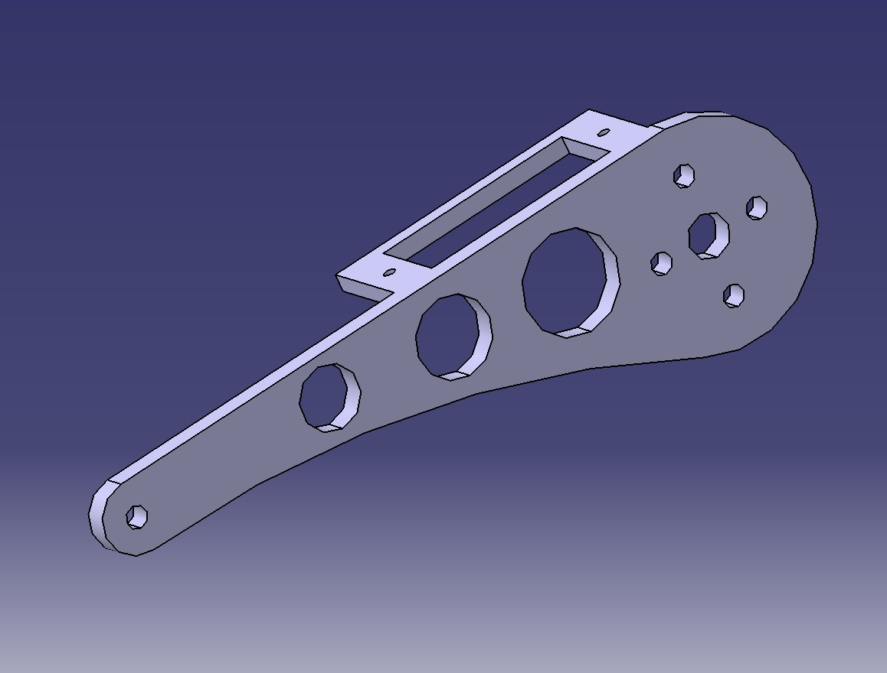
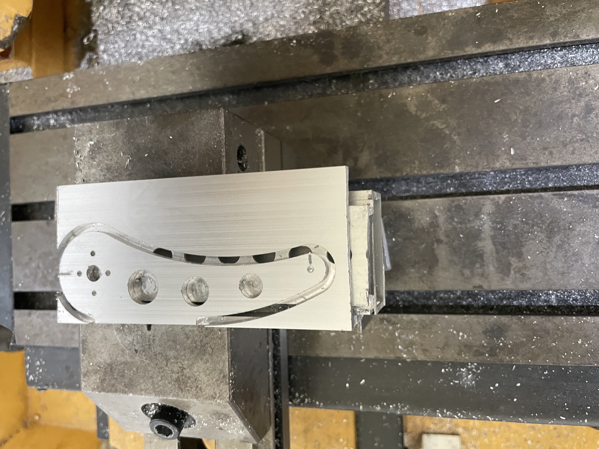
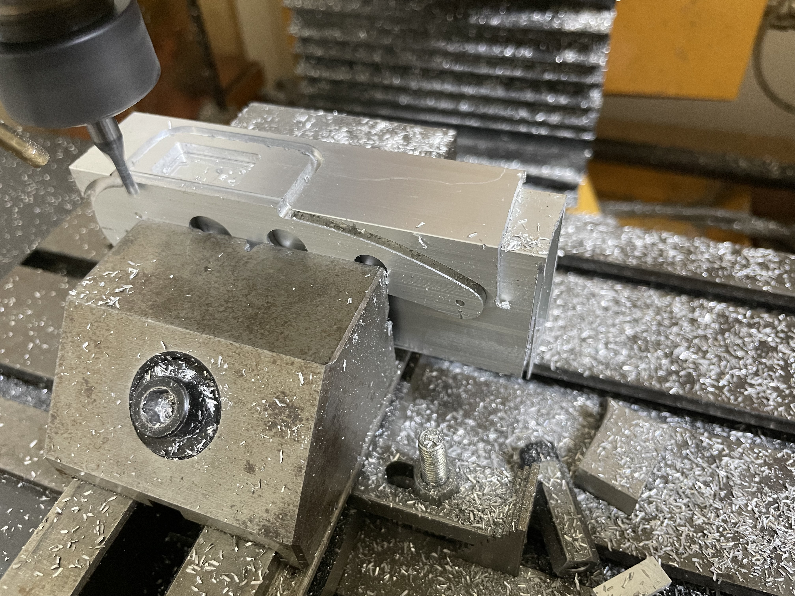
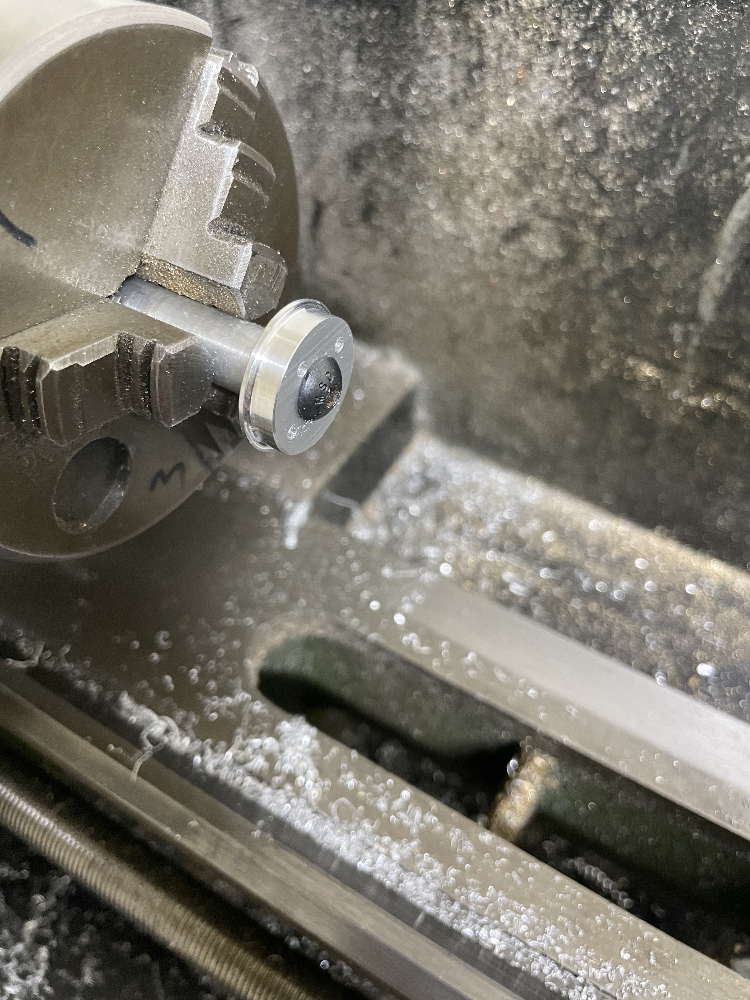
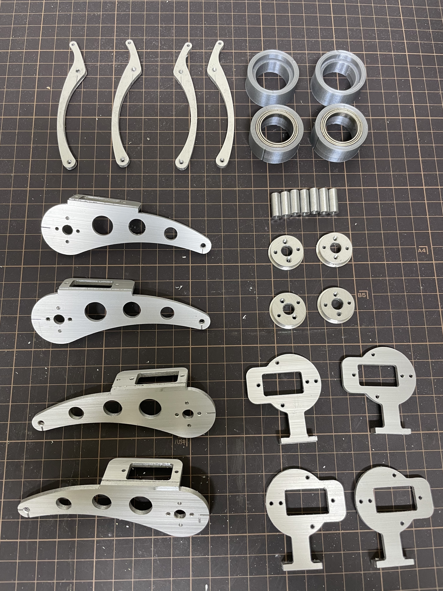
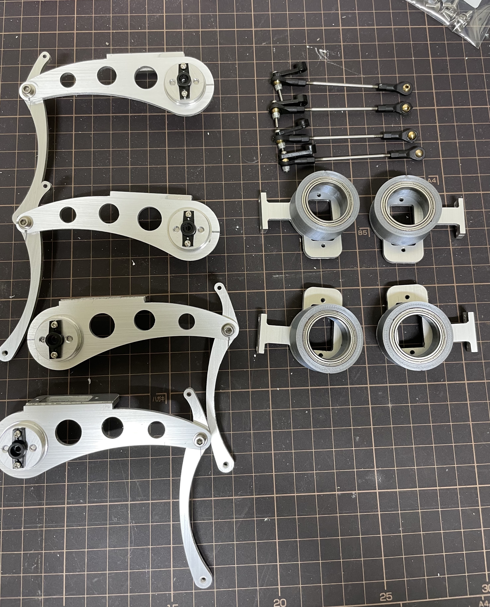
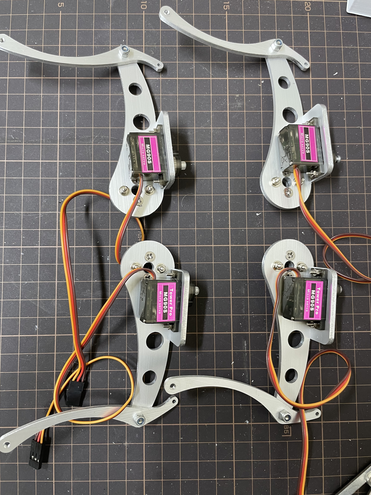
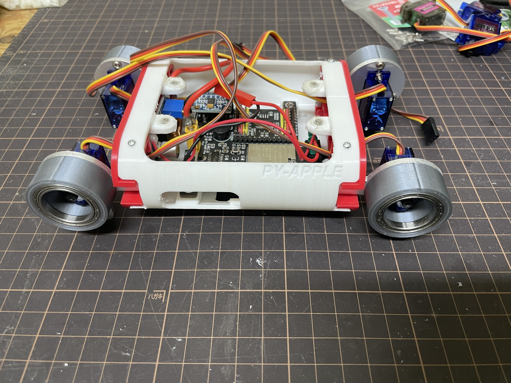
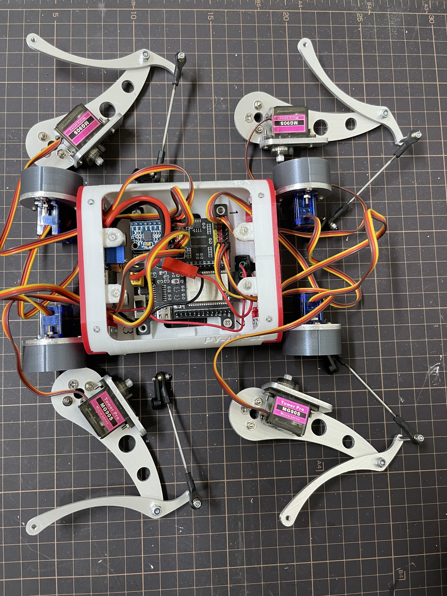
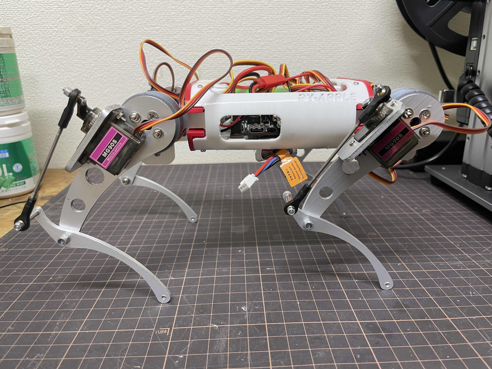

当社のオリジナル製品「RoboDog」は、パーツを自社設計・加工し、丁寧に組み上げています。設計から最終調整までの10の工程を写真で紹介します。

1. 機構設計
3D CADを用いて各リンクの寸法・関節可動域・重心バランスを最適化。歩行シミュレーションを繰り返し、理想的な機構を導き出します。

2. フレーム切削
ジュラルミン板材を自社CNCフライスで精密削り出し。軽量かつ高剛性なモノコックフレームを製作します。

3. 脚部リンク加工
大腿・下腿リンクをワイヤー放電加工機で切断。肉抜き形状により軽量化しながらも強度を維持。

4. 旋盤加工
ベアリングハウジングの旋盤加工

5.完成部品
すべての部品はCNC加工機を使用して製造されています。

6. フレーム組立て
加工済みフレームに脚部ユニット ロボットの骨格を完成させます。

7. サーボモーターの組み立て
加工済みフレームに脚部ユニット・サーボモーターの組み立てロボットの骨格を完成させます。

8. ファームウェア書込み
歩行制御アルゴリズムを書き込み、各モータのパラメータを調整。個体差を吸収するキャリブレーションを実施。

9. モーター試験
サーボモーターテスト・基板・バッテリーを組み込み。センサフィードバックを確認し、歩容の最適化を行います。

10. 最終検査・梱包
全機能・外観チェック後、専用ケースに収納。出荷前最終動作確認を経てお客様のもとへ。
※画像は実際の製作工程を撮影したものです。